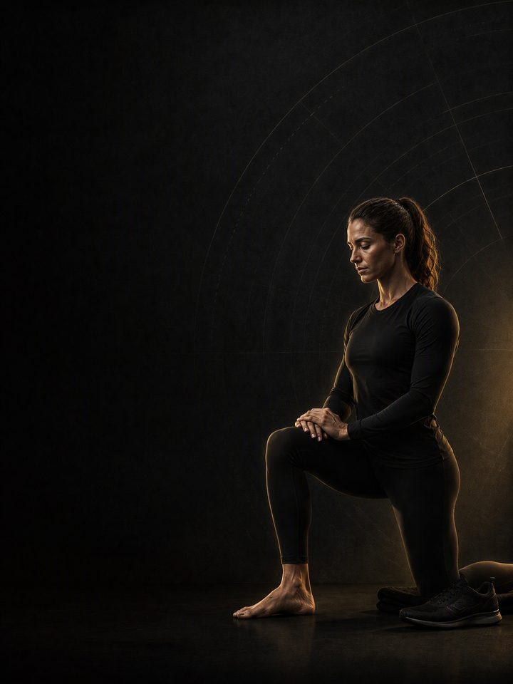

التحمل · الاستشفاء
أسبوعان من الراحة لا يكلّفانك شيئًا تقريبًا. والتسابق متعبًا طوال الشتاء يكلّفك موسمًا.
- مناسب لـالعدّائين وراكبي الدراجات ولاعبي الترايثلون بعد سباقهم الأخير
- أيام التدريب2–3 أيام في النادي أسبوعيًا، مع حجم جري منخفض
- مدة الجلسة51–58 دقيقة
- المعداتنادٍ متكامل فيه بار وأجهزة ودرجة
- الصيغةملف PDF للهاتف، وكل تمرين مرتبط بفيديو توضيحي
المتجر يفتح قريبًا. حاليًا ينسخ زر الشراء رسالة قصيرة ويفتح إنستغرام: الصقها وتستلم الملف هناك.
لمن هذا البرنامج
العدّاؤون وراكبو الدراجات ولاعبو الترايثلون الذين انتهى موسمهم للتو.
الأسبوعان الأولان من هذه الكتلة يصفان شبه لا شيء، وهذا أهم جزء في البرنامج. ورياضيو التحمّل سيئون في هذا. فالخوف من فقدان اللياقة أقوى من الأدلة، وأسبوعان من الراحة الحقيقية يسدّدان موسمًا كاملًا من حمل الأوتار المتراكم، ودين النوم، والتعب الذهني. بعد ذلك، هذه هي الكتلة الوحيدة في السنة التي يقود فيها النادي ويتبعه الجري. يعود الحجم ببطء، ويُعاد بناء تمارين القوة من قاعدة خفيفة، وتُعالَج الاختلالات التي تظهر بنهاية الموسم، كجهة أضعف، أو ورك متيبّس، أو عضلات خلفية للفخذ لم تُدرَّب قط، ما دام هناك وقت ولا سباق تحميه.
موقعه في السنة: الكتلة 4 من 4. الأساس، والبناء، والمنافسة، والاستشفاء. ابدأه مباشرة بعد سباقك الأخير في الموسم. ثم تبدأ السنة من جديد بكتلة الأساس.
أسبوعك
الأسبوعان 1–2 شبه لا شيء: يوم قصير واحد في النادي، ثم امشِ، واسبح بسهولة، واركب الدراجة للمتعة إن أردت. لا جري منظَّم، ولا ساعة. ومن الأسبوع 3 يبدأ أسبوع النادي الكامل.
| الأحد | الاثنين | الثلاثاء | الأربعاء | الخميس | الجمعة | السبت |
|---|---|---|---|---|---|---|
| اليوم 1 | تدريب سهل | اليوم 2 | راحة | اليوم 3 | تدريب سهل | راحة |
ثلاثة أيام في النادي إذا كان حجم جريك منخفضًا فعلًا. وانزل إلى يومين، اليوم 1 واليوم 2، كلما عادت المسافات إلى الارتفاع.
كل جلسة تسير بالطريقة نفسها:
- الإحماء، 8–10 دقائق. التسلسل الكامل، مُؤدًّى كما يجب. لا عجلة في هذه الكتلة.
- الرفعات الرئيسية، 25–30 دقيقة. تكرارات أعلى من بقية السنة، وأحمال معتدلة، ومدى حركي كامل.
- تمارين الساق الواحدة والاختلالات، 10 دقائق. الجهة الأضعف أولًا، مع مجموعة إضافية حتى تتعادل الجهتان.
- عمل الأوتار، 8 دقائق. رفع السمانة، والنوردي، ورفع مقدّمة القدم. لا يغيب أبدًا.
الجلسات هنا أطول منها في أي وقت آخر من السنة، لأنها هذه المرة لا تنافس الجري الشاق على تعافيك.
كيف تتقدّم الأسابيع الـ12
الاستراحات القصيرة تكلّف أقل بكثير مما يخشاه الرياضيون. أسبوعان بلا تدريب لا ينتجان إلا انخفاضًا صغيرًا في اللياقة الهوائية يُستعاد بسرعة، بينما تحتاج الأنسجة التي تحمّلت موسمًا من التحميل المتكرّر إلى هذا النوع تحديدًا من إزالة الحمل لتستعيد توازنها. وتتلاشى القوة أبطأ مما يتوقّعه معظم الناس، ولهذا يُعاد بناؤها بسهولة من الأسبوع 3. والسبب الثاني لوجود هذه الكتلة هو عدم التماثل. تتّسع الفروق بين الجهتين في القوة وفي قدرة الساق الواحدة على امتداد الموسم، وتُغلق أسرع بكثير حين لا يكون هناك سباق تحميه.
ثلاث مراحل: لا شيء، ثم قوة عامة، ثم تسليم إلى كتلة الأساس التالية. التكرارات أعلى والأحمال أقل من أي وقت آخر في السنة، لأن الهدف هو جودة الأنسجة والتماثل، لا القوة القصوى.
| الأسبوعان 1–2 | الأسابيع 3–8 | الأسابيع 9–12 | |
|---|---|---|---|
| المرحلة | تعافي الأنسجة | القدرة البنيوية | إنتاج القوة |
| الهدف | إتاحة التعافي للعضلات والأوتار بعد الموسم | إعادة بناء العضلات، والمدى الحركي للمفاصل، والتماثل بين اليسار واليمين | إعادة بناء القوة القصوى نحو أحمال كتلة الأساس |
| كيف يبدو | يوم قصير واحد في النادي، ولا شيء منظَّم غيره. امشِ، واسبح بسهولة، واركب الدراجة للاستمتاع، والعب رياضة أخرى بشكل سيئ | مجموعات من 8–12 تكرارًا، وأحمال معتدلة، ومدى حركي كامل. الجهة الأضعف أولًا | تنخفض التكرارات، وترتفع الأحمال، وتبدأ الجلسات تشبه كتلة الأساس |
| أيام النادي أسبوعيًا | 1 | 3 | 2 |
| المجموعات الفعلية أسبوعيًا | 8 | 53 | 34 |
| متوسط الجهد | بلا تقييم للجهد. أحمال خفيفة يحدّدها التحكّم | جهد 6.1/10، والتكرارات المتبقية نحو 4 | جهد 7.1/10، والتكرارات المتبقية نحو 3 |
| مرات الهبوط أسبوعيًا | 20 | 60 | 95 |
المرحلة في لمحة
المجموعات التدريبية أسبوعيًا حسب ما تدرّبه. الخط المتقطع هو مستوى الجهد.
موقع هذه المرحلة في السنة التدريبية
نفّذ المراحل الأربع بالترتيب لتكتمل سنة تدريبية كاملة.
الجهد (RPE) تقييم من 10 لمدى صعوبة المجموعة. والتكرارات المتبقية هي عدد التكرارات الجيدة الإضافية التي كنت تستطيع أداءها، فعبارة «التكرارات المتبقية نحو 3» تعني أنه يتبقى في الخزان نحو 3 تكرارات. وتأتي أول أحمال مقيَّمة بالجهد في الأسبوع 3.
أسبوع التخفيف: الأسبوع 12 يخفّض المجموعات إلى النصف.
القواعد التي تجعله ينجح
- الأسبوعان الأولان هما البرنامج. شبه لا شيء، عن قصد. أسبوعان من الراحة يكلّفان قدرًا صغيرًا من اللياقة الهوائية يُستعاد بسرعة، ويسدّدان موسمًا من حمل الأوتار والتعب الذهني.
- أعِد بناء النادي قبل المسافات. هذه هي الكتلة الوحيدة التي تقود فيها القوة. يعود حجم الجري تحتها بنحو عشرة في المئة أسبوعيًا، لا أسرع.
- الجهة الأضعف أولًا، بمجموعة إضافية. يتّسع عدم التماثل خلال موسم السباقات، ويُغلق أسرع ما يكون حين لا يكون هناك ما تحميه. كل تمرين للساق الواحدة يبدأ بالجهة الأضعف.
- تكرارات أعلى، وأحمال أقل. مجموعات من 8–12 تكرارًا في مرحلة القدرة البنيوية. الهدف جودة الأنسجة والمدى الحركي. أما القوة فمهمة المرحلة 3.
- عالج الآلام العالقة الآن. كل ما واصلت السباقات رغمه يُعالَج هنا، بالتوازي مع برنامج AXIS التصحيحي المناسب. لا نافذة أفضل من هذه في السنة.
المصطلحات
- الكتلة التدريبية: 12 أسبوعًا. هذا البرنامج. تطوّر الكتلة الواحدة مجموعة واحدة من الصفات إلى مستوى محدّد.
- المرحلة (الدورة المتوسطة): تستهدف كل مرحلة صفة واحدة. ومدتها هنا أسبوعان، ثم ستة أسابيع، ثم أربعة. فالمدة تتبع الهدف.
- الأسبوع التدريبي (الدورة الصغرى): حيث يرتفع الجهد، وتُضاف المجموعات، ويقع أسبوع التخفيف.
- السنة التدريبية (الدورة الكبرى): أربع كتل بالترتيب (الأساس، والبناء، والمنافسة، والاستشفاء)، نحو 48 أسبوعًا.
كيف تقيس تقدّمك
تعيد الاختبار في الأسبوع 3، حين يبدأ البرنامج فعلًا، لا قبله. ثم تعيده في الأسبوع 12، وتلك الأرقام هي نقطة بداية السنة التالية. ويبدأ كل أسبوع تدريبي أيضًا بفحص مدته 90 ثانية: ثلاث وثبات طويلة من الثبات في بداية اليوم 1، وتحتفظ بأفضلها. إذا كانت النتيجة أقل من متوسطك المتحرّك بأكثر من 10%، فخفّف ذلك اليوم: تُحذف تمارين القدرة الانفجارية، وتخسر كل رفعة مجموعة واحدة، أيًا كان المكتوب في الصفحة.
شكل التقدّم الجيد
- الأسبوعان 1–2: ستشعر كأنك تخسر كل شيء. أنت لا تخسره. أسبوعان يكلّفان جزءًا صغيرًا مما يكلّفه موسم من التعب المتراكم.
- الأسابيع 3–8: تعود القوة أسرع مما بُنيت في المرة الأولى، وتُغلق الفروق بين الجهتين بسرعة.
- الأسابيع 9–12: تقترب الأحمال من النقطة التي تلتقطها منها الكتلة التالية، ويعود حجم الجري إلى أساس طبيعي.
أفضل علامة على أن هذه الكتلة نجحت هي أن تبدأ كتلة الأساس التالية بلا آلام عالقة ولا عدم تماثل.
احترم الأسبوع
احسب كل شيء: جلسات التدريب، والنادي، والنوم. القفزات المفاجئة في حمل التدريب الأسبوعي هي أوثق مؤشر على الإصابة في الرياضة غير الاحترافية. في أسبوع تدريب ثقيل، احذف جلسة نادٍ أو اختصر تمارين القدرة الانفجارية، لكن لا تختصر التدريب والتعافي معًا أبدًا. احمِ 7–9 ساعات من النوم، فهو أقوى أداة متاحة للأداء، وأرخصها.
الأدلة العلمية
كل برنامج في المكتبة مبني على أبحاث منشورة، وقوة تلك الأبحاث مذكورة صراحةً لا ضمنًا. وحيث تكون الأدلة محدودة، تقول الصفحة ذلك.
| النتيجة | المصدر | ما لا تُظهره |
|---|---|---|
| تدريب القوة يخفض الإصابات الرياضية إلى أقل من ثلث معدلها في المجموعة الضابطة. أما الإطالة فلا تخفضها. | Lauersen, Bertelsen & Andersen, Br J Sports Med 2014. Meta-analysis of 25 RCTs, 26,610 participants. PMID 24100287 | نسبة الخطر 0.32 لتدريب القوة و0.96 للإطالة. تفاوتت التجارب كثيرًا، ولم تكن الجرعة موحّدة. |
| آلام أوتار الطرف السفلي تستجيب للتحميل المتدرّج. أما أي قاعدة تدرّج هي الأفضل فلم يثبت بعد. | Escriche-Escuder, Casaña & Cuesta-Vargas, BMJ Open 2020. Systematic review, 30 RCTs in Achilles, patellar and gluteal tendinopathy. PMID 33444210 | معظم البرامج تتدرّج بحسب الألم، وهذه الممارسة غير مدعومة بأدلة قوية. انسب الفضل إلى التحميل، لا إلى إيقاع بعينه. ولم يثبت تفوّق التمرين اللامركزي وحده. |
| البرامج التي تتضمّن تمرين نورديك للعضلات الخلفية للفخذ تخفض إصابات العضلات الخلفية للفخذ إلى النصف تقريبًا. | van Dyk, Behan & Whiteley, Br J Sports Med 2019. Meta-analysis, 15 studies, 8,459 athletes. PMID 30808663 | نسبة الخطر 0.49. يصغر الأثر لكنه يبقى قائمًا عند استبعاد الدراسات الثماني عالية خطر التحيّز (0.55). وهي تقيس البرامج التي تتضمّن التمرين، لا التمرين وحده. |
| أي وصفة تدريب معقولة أفضل من عدم التدريب. الأحمال الأثقل تحتل المرتبة الأعلى للقوة، والمجموعات المتعددة تحتل المرتبة الأعلى لحجم العضلات. | Currier et al., Br J Sports Med 2023. Network meta-analysis, 178 strength and 119 hypertrophy studies. PMID 37414459 | كانت الفروق بين الوصفات صغيرة، وكلها نجحت. |
ماذا بعد
بعد 12 أسبوعًا:
- ابدأ السنة التالية: التحمل · الأساس
- شيء واصلت السباقات رغمه: السلسلة التصحيحية
قبل الشراء: احصل على موافقة طبية أولًا إذا
- كان لديك ألم في الصدر، أو ضيق تنفس غير معتاد، أو خفقان، أو دوخة أثناء المجهود.
- كان لديك ضغط دم مرتفع غير منضبط، أو مرض قلبي معروف، أو خضعت لعملية جراحية مؤخرًا.
- كنتِ حاملًا أو بعد الولادة بفترة قصيرة. احصلي على موافقة وبرنامج مخصص أولًا.
- كان لديك ألم حاد في مفصل واحد لا يهدأ. ابدأ ببرنامج أكسس التصحيحي المناسب.
هذا البرنامج إرشاد عام للياقة البدنية، ولا يغني عن التقييم الطبي.
المتجر يفتح قريبًا. حاليًا ينسخ زر الشراء رسالة قصيرة ويفتح إنستغرام: الصقها وتستلم الملف هناك.